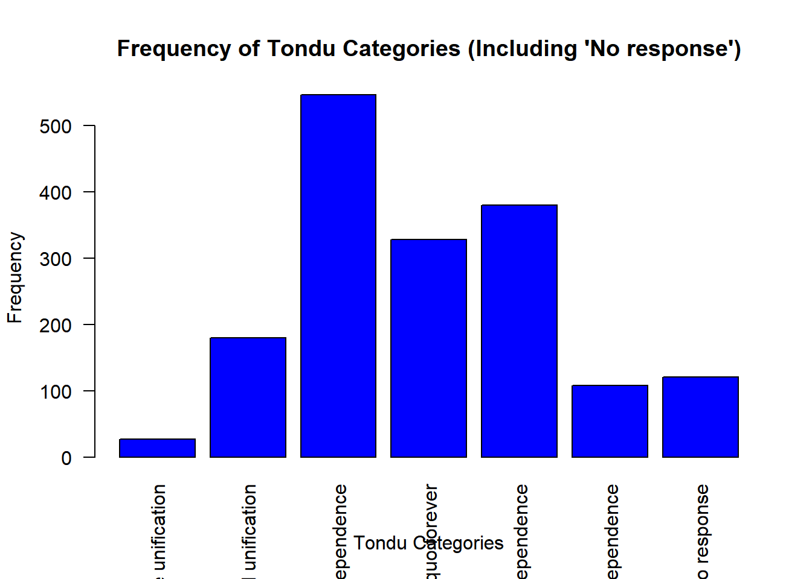
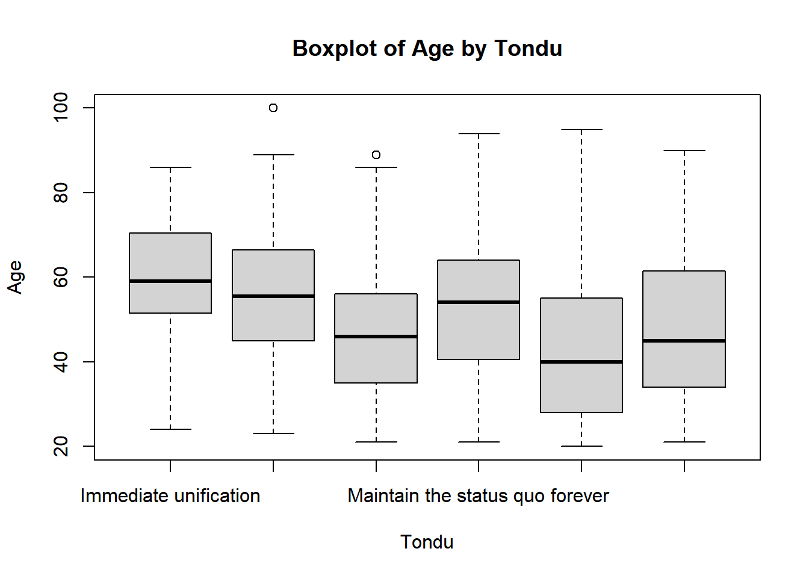
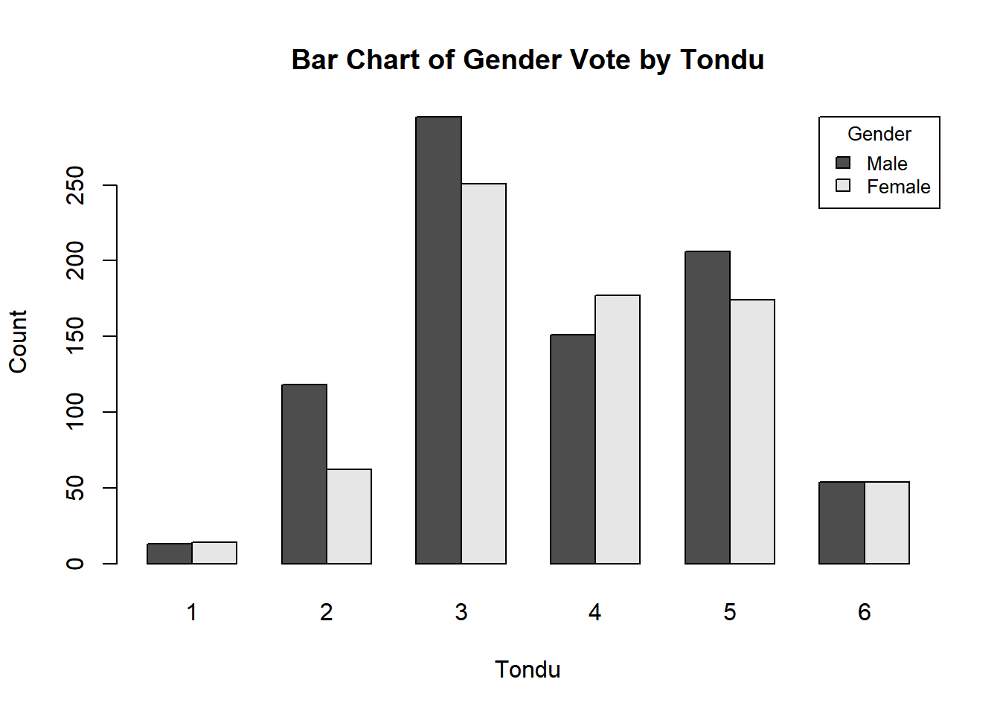
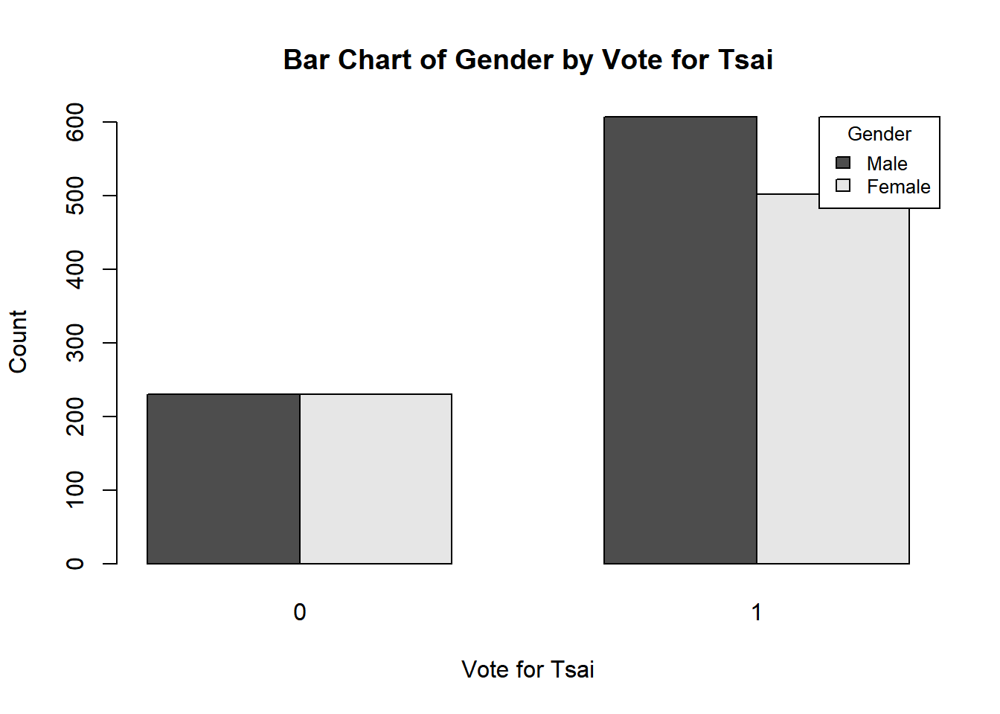

<labelled<double>[7]>: Position on unification and independence
[1] 3 5 9 4 6 2 1
Labels:
value label
1 Immediate unification
2 Maintain the status quo,move toward unification
3 Maintain the status quo, decide either unification or independence
4 Maintain the status quo forever
5 Maintain the status quo,move toward independence
6 Immediate independence
9 Nonresponse
summary(TEDS_2016$Tondu)
Min. 1st Qu. Median Mean 3rd Qu. Max.
1.000 3.000 4.000 4.127 5.000 9.000
Histogram of ‘Tondu’
hist(TEDS_2016$Tondu, main ="Histogram of Tondu", xlab ="Tondu")
TEDS_2016$Tondu_numeric <-as.numeric(TEDS_2016$Tondu)TEDS_2016$Tondu_with_no_response <-factor(TEDS_2016$Tondu_numeric, levels =c(1, 2, 3, 4, 5, 6, 9), labels =c("Immediate unification", "Maintain the status quo, move toward unification", "Maintain the status quo, decide either unification or independence", "Maintain the status quo forever", "Maintain the status quo, move toward independence", "Immediate independence", "No response")) tondu_freq_table <-table(TEDS_2016$Tondu_with_no_response) tondu_freq_table
Immediate unification
27
Maintain the status quo, move toward unification
180
Maintain the status quo, decide either unification or independence
546
Maintain the status quo forever
328
Maintain the status quo, move toward independence
380
Immediate independence
108
No response
121
Ordinal Logistic Regression
TEDS_2016 <-subset(TEDS_2016, !is.na(Tondu) & Tondu !=9&!is.na(votetsai)) TEDS_2016$Tondu <-factor(TEDS_2016$Tondu, levels =c(1, 2, 3, 4, 5, 6), labels =c("Immediate unification", "Maintain the status quo, move toward unification", "Maintain the status quo, decide either unification or independence", "Maintain the status quo forever", "Maintain the status quo, move toward independence", "Immediate independence"), ordered =TRUE) ordinal_model <-polr(Tondu ~ female + DPP + age + income + edu + Taiwanese + Econ_worse, data = TEDS_2016)
barplot(tondu_freq_table, main ="Frequency of Tondu Categories (Including 'No response')", xlab ="Tondu Categories", ylab ="Frequency", las =2, col ="blue")

Boxplot of Age by Tondu
boxplot(age ~ Tondu, data = TEDS_2016, main ="Boxplot of Age by Tondu", xlab ="Tondu", ylab ="Age")

Bar Chart of Gender Vote by Tondu
barplot(table(TEDS_2016$female, TEDS_2016$Tondu_numeric), beside =TRUE, legend =c("Male", "Female"), main ="Bar Chart of Gender Vote by Tondu", xlab ="Tondu", ylab ="Count", args.legend =list(title ="Gender", x ="topright", cex =0.8))

Bar Chart of Gender by Vote for Tsai
barplot(table(TEDS_2016$female, TEDS_2016$votetsai), beside =TRUE, legend =c("Male", "Female"), main ="Bar Chart of Gender by Vote for Tsai", xlab ="Vote for Tsai", ylab ="Count", args.legend =list(title ="Gender", x ="topright", cex =0.8))

Results and Discussion
Results and Discussion
Analysis of the results: - (Intercept): The estimated log-odds of votetsai being 1 (versus 0) when all predictors are at their reference levels is 1.490842. This is statistically significant with a p-value of 0.00058.
femaleFemale: Being female is associated with a decrease in the log-odds of votetsai by -0.404225 compared to being male (the reference category). This effect is statistically significant (p = 0.00247).
DPP1: Affiliation with DPP (Democratic Progressive Party) is associated with an increase in the log-odds of votetsai by 2.963318 compared to non-affiliation (the reference category). This is highly statistically significant (p < 2e-16).
age: Each additional year of age is associated with a decrease in the log-odds of votetsai by -0.023759. This effect is statistically significant (p = 2.91e-06).
income: The coefficient for income is not statistically significant (p = 0.88563), suggesting that income does not have a significant effect on the log-odds of votetsai.
edu: Higher education levels are associated with a decrease in the log-odds of votetsai by -0.175804. This effect is statistically significant (p = 0.00358).
Taiwanese1: Identifying as Taiwanese is associated with an increase in the log-odds of votetsai by 1.038279. This effect is highly statistically significant (p = 1.81e-14).
Econ_worse1: Believing the economy has gotten worse is associated with an increase in the log-odds of votetsai by 0.358628. This effect is statistically significant (p = 0.00698).
The model’s AIC (Akaike Information Criterion) is 1414.2, which can be used for model comparison purposes. The lower the AIC, the better the model fits the data while penalizing for complexity.
The null deviance and residual deviance indicate how well the model fits the data compared to a null model with only the intercept. The significant reduction from the null deviance to the residual deviance shows that the predictors improve the model fit.
Overall, the model suggests that gender, DPP affiliation, age, education level, Taiwanese identity, and perception of the economy are significant predictors of votetsai. Income is not a significant predictor in this model.